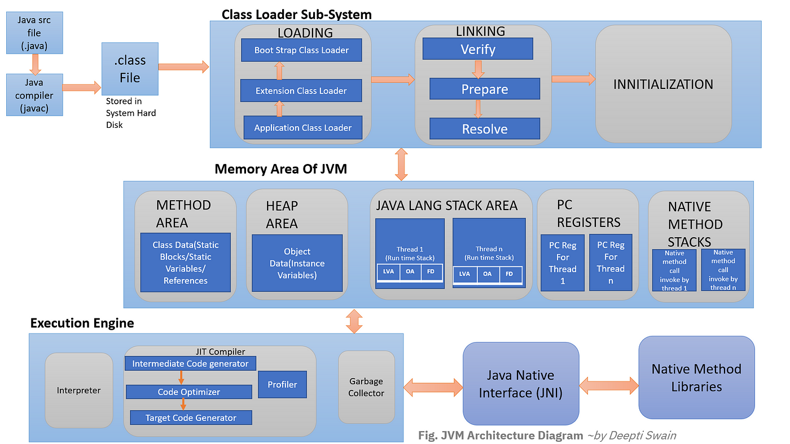
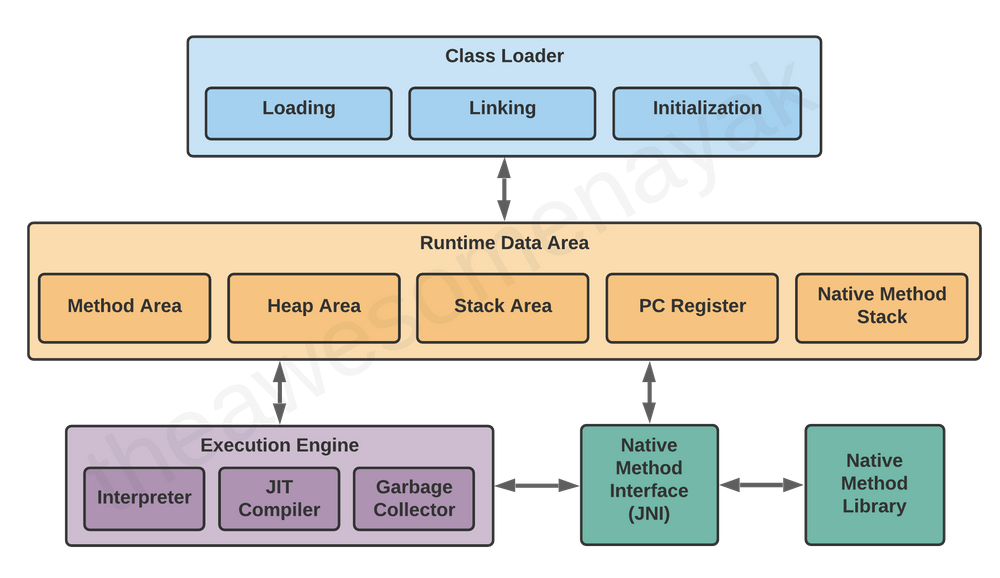
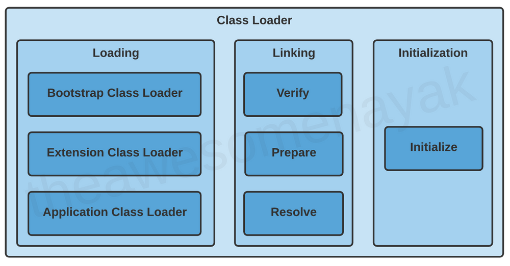
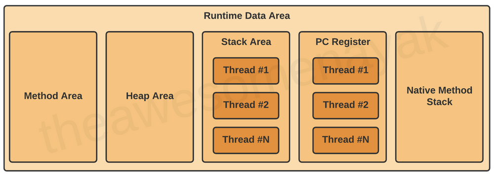
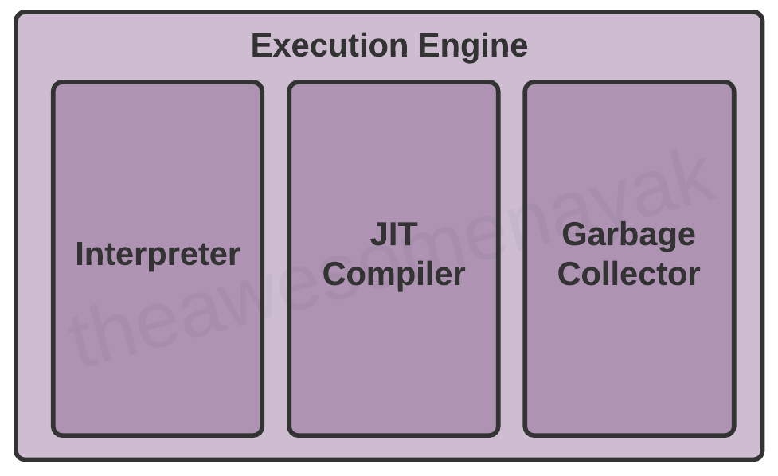

Whether you have used Java to develop programs or not, you might have heard about the Java Virtual Machine (JVM) at some point or another.
JVM is the core of the Java ecosystem, and makes it possible for Java-based software programs to follow the "write once, run anywhere" approach. You can write Java code on one machine, and run it on any other machine using the JVM.
JVM was initially designed to support only Java. However, over the time, many other languages such as Scala, Kotlin and Groovy were adopted on the Java platform. All of these languages are collectively known as JVM languages.
In this article, we will learn more about the JVM, how it works, and the various components that it is made of.
What is a Virtual Machine?
Before we jump into the JVM, let's revisit the concept of a Virtual Machine (VM).
A virtual machine is a virtual representation of a physical computer. We can call the virtual machine the guest machine, and the physical computer it runs on is the host machine.

A single physical machine can run multiple virtual machines, each with their own operating system and applications. These virtual machines are isolated from each other.
What is the Java Virtual Machine?
In programming languages like C and C++, the code is first compiled into platform-specific machine code. These languages are called compiled languages.
On the other hand, in languages like JavaScript and Python, the computer executes the instructions directly without having to compile them. These languages are called interpreted languages.
Java uses a combination of both techniques. Java code is first compiled into byte code to generate a class file. This class file is then interpreted by the Java Virtual Machine for the underlying platform. The same class file can be executed on any version of JVM running on any platform and operating system.
Similar to virtual machines, the JVM creates an isolated space on a host machine. This space can be used to execute Java programs irrespective of the platform or operating system of the machine.
Java Virtual Machine Architecture
The JVM consists of three distinct components:
- Class Loader
- Runtime Memory/Data Area
- Execution Engine

Let's take a look at each of them in more detail.
1. Class Loader
When you compile a .java source file, it is converted into byte code as a
.class file. When you try to use this class in your program, the class
loader loads it into the main memory.
The first class to be loaded into memory is usually the class that contains the
main() method.
There are three phases in the class loading process: loading, linking, and initialization.

Loading
Loading involves taking the binary representation (bytecode) of a class or interface with a particular name, and generating the original class or interface from that.
There are three built-in class loaders available in Java:
- Bootstrap Class Loader - This is the root class
loader. It is the superclass of Extension Class Loader and loads the standard Java
packages like
java.lang,java.net,java.util,java.io, and so on. These packages are present inside thert.jarfile and other core libraries present in the$JAVA_HOME/jre/libdirectory. - Extension Class Loader - This is the subclass of the Bootstrap
Class Loader and the superclass of the Application Class Loader. This loads the
extensions of standard Java libraries which are present in the
$JAVA_HOME/jre/lib/extdirectory. - Application Class Loader - This is the final class loader and the
subclass of Extension Class Loader. It loads the files present on the classpath. By
default, the classpath is set to the current directory of the application. The
classpath can also be modified by adding the
-classpathor-cpcommand line option.
The JVM uses the ClassLoader.loadClass() method for loading the class into
memory. It tries to load the class based on a fully qualified name.
If a parent class loader is unable to find a class, it delegates the work to a child
class loader. If the last child class loader isn't able to load the class either, it
throws NoClassDefFoundError or ClassNotFoundException.
Linking
After a class is loaded into memory, it undergoes the linking process. Linking a class or interface involves combining the different elements and dependencies of the program together.
Linking includes the following steps:
Verification: This phase checks the structural correctness of the
.class file by checking it against a set of constraints or rules. If
verification fails for some reason, we get a VerifyException.
For example, if the code has been built using Java 11, but is being run on a system that has Java 8 installed, the verification phase will fail.
Preparation: In this phase, the JVM allocates memory for the static fields of a class or interface, and initializes them with default values.
For example, assume that you have declared the following variable in your class:
private static final boolean enabled = true;During the preparation phase, JVM allocates memory for the variable enabled
and sets its value to the default value for a boolean, which is false.
Resolution: In this phase, symbolic references are replaced with direct references present in the runtime constant pool.
For example, if you have references to other classes or constant variables present in other classes, they are resolved in this phase and replaced with their actual references.
Initialization
Initialization involves executing the initialization method of the class or interface
(known as <clinit>). This can include calling the class's
constructor, executing the static block, and assigning values to all the static
variables. This is the final stage of class loading.
For example, when we declared the following code earlier:
private static final boolean enabled = true;The variable enabled was set to its default value of false
during the preparation phase. In the initialization phase, this variable is assigned its
actual value of true.
Note: the JVM is multi-threaded. It can happen that multiple threads are trying to initialize the same class at the same time. This can lead to concurrency issues. You need to handle thread safety to ensure that the program works properly in a multi-threaded environment.
2. Runtime Data Area
There are five components inside the runtime data area:

Let's look at each one individually.
Method Area
It stores structures such as run-time constant pool, field and method data, the code for methods and constructors as well as fully qualified class names. The JVM stores these structures for each and every class. The method area, also known as permanent generation space (PermGen), is created when the JVM starts up. The memory for this area does not need to be contiguous. All the JVM threads share this memory area.
If the memory available in the method area is not sufficient for the program startup, the
JVM throws an OutOfMemoryError.
For example, assume that you have the following class definition:
public class Employee {
private String name;
private int age;
public Employee(String name, int age) {
this.name = name;
this.age = age;
}
}In this code example, the field level data such as name and age
and the constructor details are loaded into the method area.
The method area is created on the virtual machine start-up, and there is only one method area per JVM.
Heap Area
All the objects and their corresponding instance variables are stored here. This is the run-time data area from which memory for all class instances and arrays is allocated.
For example assume that you are declaring the following instance:
Employee employee = new Employee();In this code example, an instance of Employee is created and loaded into the
heap area.
The heap is created on the virtual machine start-up, and there is only one heap area per JVM.
Note: Since the Method and Heap areas share the same memory for multiple threads, the data stored here is not thread safe.
Stack Area
Whenever a new thread is created in the JVM, a separate runtime stack is also created at the same time. All local variables, method calls, and partial results are stored in the stack area.
If the processing being done in a thread requires a larger stack size than what's
available, the JVM throws a StackOverflowError.
For every method call, one entry is made in the stack memory which is called the Stack Frame. When the method call is complete, the Stack Frame is destroyed.
The Stack Frame is divided into three sub-parts:
- Local Variables – Each frame contains an array of variables known as its local variables. All local variables and their values are stored here. The length of this array is determined at compile-time.
- Operand Stack – Each frame contains a last-in-first-out (LIFO) stack known as its operand stack. This acts as a runtime workspace to perform any intermediate operations. The maximum depth of this stack is determined at compile-time.
- Frame Data – All symbols corresponding to the method are stored here. This also stores the catch block information in case of exceptions.
For example assume that you have the following code:
double calculateNormalisedScore(List<Answer> answers) {
double score = getScore(answers);
return normalizeScore(score);
}
double normalizeScore(double score) {
return (score – minScore) / (maxScore – minScore);
}
In this code example, variables like answers and score are
placed in the Local Variables array. The Operand Stack contains the variables and
operators required to perform the mathematical calculations of subtraction and division.
Note: Since the Stack Area is not shared, it is inherently thread safe.
Program Counter (PC) Registers
The JVM supports multiple threads at the same time. Each thread has its own PC Register to hold the address of the currently executing JVM instruction. Once the instruction is executed, the PC register is updated with the next instruction.
Native Method Stacks
The JVM contains stacks that support native methods. These methods are written in a language other than the Java, such as C and C++. For every new thread, a separate native method stack is also allocated.
3. Execution Engine
Once the bytecode has been loaded into the main memory, and details are available in the runtime data area, the next step is to run the program. The Execution Engine handles this by executing the code present in each class.
However, before executing the program, the bytecode needs to be converted into machine language instructions. The JVM can use an interpreter or a JIT compiler for the execution engine.

Interpreter
The interpreter reads and executes the bytecode instructions line by line. Due to the line by line execution, the interpreter is comparatively slower.
Another disadvantage of the interpreter is that when a method is called multiple times, every time a new interpretation is required.
JIT Compiler
The JIT Compiler overcomes the disadvantage of the interpreter. The Execution Engine first uses the interpreter to execute the byte code, but when it finds some repeated code, it uses the JIT compiler.
The JIT compiler then compiles the entire bytecode and changes it to native machine code. This native machine code is used directly for repeated method calls, which improves the performance of the system.
The JIT Compiler has the following components:
- Intermediate Code Generator - generates intermediate code
- Code Optimizer - optimizes the intermediate code for better performance
- Target Code Generator - converts intermediate code to native machine code
- Profiler - finds the hotspots (code that is executed repeatedly)
To better understand the difference between interpreter and JIT compiler, assume that you have the following code:
int sum = 10;
for(int i = 0 ; i <= 10; i++) {
sum += i;
}
System.out.println(sum);An interpreter will fetch the value of sum from memory for each iteration in
the loop, add the value of i to it, and write it back to memory. This is a
costly operation because it is accessing the memory each time it enters the loop.
However, the JIT compiler will recognize that this code has a HotSpot, and will perform
optimizations on it. It will store a local copy of sum in the PC register
for the thread and will keep adding the value of i to it in the loop. Once
the loop is complete, it will write the value of sum back to memory.
Note: a JIT compiler takes more time to compile the code than for the interpreter to interpret the code line by line. If you are going to run a program only once, using the interpreter is better.
Garbage Collector
The Garbage Collector (GC) collects and removes unreferenced objects from the heap area. It is the process of reclaiming the runtime unused memory automatically by destroying them.
Garbage collection makes Java memory efficient because because it removes the unreferenced objects from heap memory and makes free space for new objects. It involves two phases:
- Mark - in this step, the GC identifies the unused objects in memory
- Sweep - in this step, the GC removes the objects identified during the previous phase
Garbage Collections is done automatically by the JVM at regular intervals and does not
need to be handled separately. It can also be triggered by calling
System.gc(), but the execution is not guaranteed.
The JVM contains 3 different types of garbage collectors:
- Serial GC - This is the simplest implementation of GC, and is
designed for small applications running on single-threaded environments. It uses a
single thread for garbage collection. When it runs, it leads to a "stop the world"
event where the entire application is paused. The JVM argument to use Serial Garbage
Collector is
-XX:+UseSerialGC - Parallel GC - This is the default implementation of GC in the JVM,
and is also known as Throughput Collector. It uses multiple threads for garbage
collection, but still pauses the application when running. The JVM argument to use
Parallel Garbage Collector is
-XX:+UseParallelGC. - Garbage First (G1) GC - G1GC was designed for multi-threaded
applications that have a large heap size available (more than 4GB). It partitions
the heap into a set of equal size regions, and uses multiple threads to scan them.
G1GC identifies the regions with the most garbage and performs garbage collection on
that region first. The JVM argument to use G1 Garbage Collector is
-XX:+UseG1GC
Note: There is another type of garbage collector called Concurrent Mark Sweep (CMS) GC. However, it has been deprecated since Java 9 and completely removed in Java 14 in favour of G1GC.
Java Native Interface (JNI)
At times, it is necessary to use native (non-Java) code (for example, C/C++). This can be in cases where we need to interact with hardware, or to overcome the memory management and performance constraints in Java. Java supports the execution of native code via the Java Native Interface (JNI).
JNI acts as a bridge for permitting the supporting packages for other programming languages such as C, C++, and so on. This is especially helpful in cases where you need to write code that is not entirely supported by Java, like some platform specific features that can only be written in C.
You can use the native keyword to indicate that the method implementation
will be provided by a native library. You will also need to invoke
System.loadLibrary() to load the shared native library into memory, and
make its functions available to Java.
Native Method Libraries
Native Method Libraries are libraries that are written in other programming languages,
such as C, C++, and assembly. These libraries are usually present in the form of
.dll or .so files. These native libraries can be loaded
through JNI.
Common JVM Errors
- ClassNotFoundExcecption - This occurs when the Class Loader is
trying to load classes using
Class.forName(),ClassLoader.loadClass()orClassLoader.findSystemClass()but no definition for the class with the specified name is found. - NoClassDefFoundError - This occurs when a compiler has successfully compiled the class, but the Class Loader is not able to locate the class file at the runtime.
- OutOfMemoryError - This occurs when the JVM cannot allocate an object because it is out of memory, and no more memory could be made available by the garbage collector.
- StackOverflowError - This occurs if the JVM runs out of space while creating new stack frames while processing a thread.
Conclusion
In this article, we discussed the Java Virtual Machine's architecture and its various components. Often we do not dig deep into the internal mechanics of the JVM or care about how it works while our code is working.
It is only when something goes wrong, and we need to tweak the JVM or fix a memory leak, that we try to understand its internal mechanics.
This is also a very popular interview question, both at junior and senior levels for backend roles. A deep understanding of the JVM helps you write better code and avoid pitfalls related to stack and memory errors.